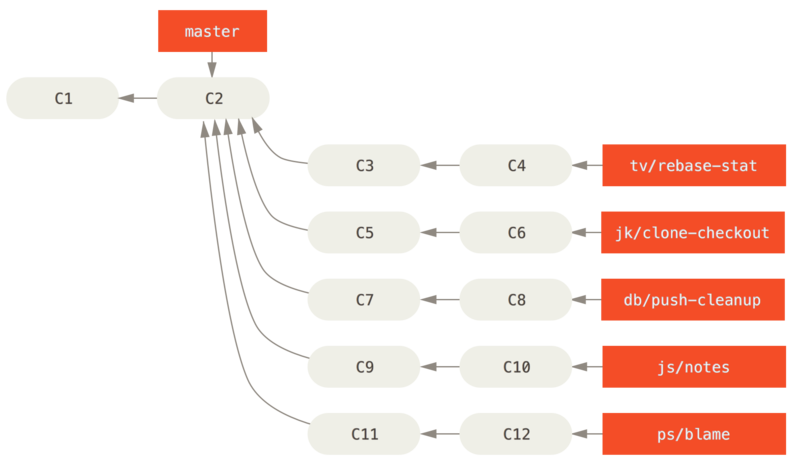
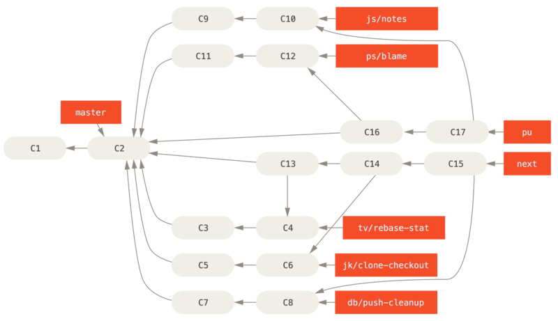
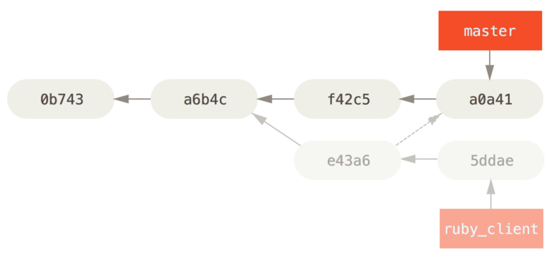

$ git branch sc/ruby_client master维护项目
除了如何有效地参与一个项目的贡献之外，你可能也需要了解如何维护项目。
这包含接受并应用别人使用 format-patch 生成并通过电子邮件发送过来的补丁，或对项目添加的远程版本库分支中的更改进行整合。
但无论是管理版本库，还是帮忙验证、审核收到的补丁，都需要同其他贡献者约定某种长期可持续的工作方式。
在特性分支中工作
如果你想向项目中整合一些新东西，最好将这些尝试局限在特性分支——一种通常用来尝试新东西的临时分支中。
这样便于单独调整补丁，如果遇到无法正常工作的情况，可以先不用管，等到有时间的时候再来处理。
如果你基于你所尝试进行工作的特性为分支创建一个简单的名字，比如 ruby_client 或者具有类似描述性的其他名字，这样即使你必须暂时抛弃它，以后回来时也不会忘记。
项目的维护者一般还会为这些分支附带命名空间，比如 sc/ruby_client（其中 sc 是贡献该项工作的人名称的简写）。
你应该记得，可以使用如下方式基于 master 分支建立特性分支：
或者如果你同时想立刻切换到新分支上的话，可以使用 checkout -b 选项：
$ git checkout -b sc/ruby_client master现在你已经准备好将别人贡献的工作加入到这个特性分支，并考虑是否将其合并到长期分支中去了。
应用来自邮件的补丁
如果你通过电子邮件收到了一个需要整合进入项目的补丁，你需要将其应用到特性分支中进行评估。
有两种应用该种补丁的方法：使用 git apply，或者使用 git am。
使用 apply 命令应用补丁
如果你收到了一个使用 git diff 或 Unix diff 命令（不推荐使用这种方式，具体见下一节）创建的补丁，可以使用 git apply 命令来应用。
假设你将补丁保存在了 /tmp/patch-ruby-client.patch 中，可以这样应用补丁：
$ git apply /tmp/patch-ruby-client.patch这会修改工作目录中的文件。
它与运行 patch -p1 命令来应用补丁几乎是等效的，但是这种方式更加严格，相对于 patch 来说，它能够接受的模糊匹配更少。
它也能够处理 git diff 格式文件所描述的文件添加、删除和重命名操作，而 patch 则不会。
最后，git apply 命令采用了一种“全部应用，否则就全部撤销（apply all or abort all）”的模型，即补丁只有全部内容都被应用和完全不被应用两个状态，而 patch 可能会导致补丁文件被部分应用，最后使你的工作目录保持在一个比较奇怪的状态。
总体来看，git apply 命令要比 patch 谨慎得多。
并且，它不会为你创建提交——在运行之后，你需要手动暂存并提交补丁所引入的更改。
在实际应用补丁前，你还可以使用 git apply 来检查补丁是否可以顺利应用——即对补丁运行 git apply --check 命令：
$ git apply --check 0001-seeing-if-this-helps-the-gem.patch
error: patch failed: ticgit.gemspec:1
error: ticgit.gemspec: patch does not apply如果没有产生输出，则该补丁可以顺利应用。 如果检查失败了，该命令还会以一个非零的状态退出，所以需要时你也可以在脚本中使用它。
使用 am 命令应用补丁
如果补丁的贡献者也是一个 Git 用户，并且其能熟练使用 format-patch 命令来生成补丁，这样的话你的工作会变得更加轻松，因为这种补丁中包含了作者信息和提交信息供你参考。
如果可能的话，请鼓励贡献者使用 format-patch 而不是 diff 来为你生成补丁。
而只有对老式的补丁，你才必须使用 git apply 命令。
要应用一个由 format-patch 命令生成的补丁，你应该使用 git am 命令。
从技术的角度看，git am 是为了读取 mbox 文件而构建的，mbox 是一种用来在单个文本文件中存储一个或多个电子邮件消息的简单纯文本格式。
其大致格式如下所示：
From 330090432754092d704da8e76ca5c05c198e71a8 Mon Sep 17 00:00:00 2001
From: Jessica Smith <jessica@example.com>
Date: Sun, 6 Apr 2008 10:17:23 -0700
Subject: [PATCH 1/2] add limit to log function
Limit log functionality to the first 20这其实就是你前面看到的 format-patch 命令输出的开始几行。
而同时它也是有效的 mbox 电子邮件格式。
如果有人使用 git send-email 命令将补丁以电子邮件的形式发送给你，你便可以将它下载为 mbox 格式的文件，之后将 git am 命令指向该文件，它会应用其中包含的所有补丁。
如果你所使用的邮件客户端能够同时将多封邮件保存为 mbox 格式的文件，你甚至能够将一系列补丁打包为单个 mbox 文件，并利用 git am 命令将它们一次性全部应用。
然而，如果贡献者将 format-patch 生成的补丁文件上传到类似 Request Ticket 的任务处理系统，你可以先将其保存到本地，之后通过 git am 来应用补丁：
$ git am 0001-limit-log-function.patch
Applying: add limit to log function你会看到补丁被顺利地应用，并且为你自动创建了一个新的提交。
其中的作者信息来自于电子邮件头部的 From 和 Date 字段，提交消息则取自 Subject 和邮件正文中补丁之前的内容。
比如，应用上面那个 mbox 示例后生成的提交是这样的：
$ git log --pretty=fuller -1 commit 6c5e70b984a60b3cecd395edd5b48a7575bf58e0 Author: Jessica Smith <jessica@example.com> AuthorDate: Sun Apr 6 10:17:23 2008 -0700 Commit: Scott Chacon <schacon@gmail.com> CommitDate: Thu Apr 9 09:19:06 2009 -0700 add limit to log function Limit log functionality to the first 20
其中 Commit 信息表示的是应用补丁的人和应用补丁的时间。
Author 信息则表示补丁的原作者和原本的创建时间。
但是，有时候无法顺利地应用补丁。
这也许是因为你的主分支和创建补丁的分支相差较多，也有可能是因为这个补丁依赖于其他你尚未应用的补丁。
这种情况下，git am 进程将会报错并且询问你要做什么：
$ git am 0001-seeing-if-this-helps-the-gem.patch
Applying: seeing if this helps the gem
error: patch failed: ticgit.gemspec:1
error: ticgit.gemspec: patch does not apply
Patch failed at 0001.
When you have resolved this problem run "git am --resolved".
If you would prefer to skip this patch, instead run "git am --skip".
To restore the original branch and stop patching run "git am --abort".该命令将会在所有出现问题的文件内加入冲突标记，就和发生冲突的合并或变基操作一样。
而你解决问题的手段很大程度上也是一样的——即手动编辑那些文件来解决冲突，暂存新的文件，之后运行 git am --resolved 继续应用下一个补丁：
$ (fix the file)
$ git add ticgit.gemspec
$ git am --resolved
Applying: seeing if this helps the gem如果你希望 Git 能够尝试以更加智能的方式解决冲突，你可以对其传递 -3 选项来使 Git 尝试进行三方合并。
该选项默认并没有打开，因为如果用于创建补丁的提交并不在你的版本库内的话，这样做是没有用处的。
而如果你确实有那个提交的话——比如补丁是基于某个公共提交的——那么通常 -3 选项对于应用有冲突的补丁是更加明智的选择。
$ git am -3 0001-seeing-if-this-helps-the-gem.patch
Applying: seeing if this helps the gem
error: patch failed: ticgit.gemspec:1
error: ticgit.gemspec: patch does not apply
Using index info to reconstruct a base tree...
Falling back to patching base and 3-way merge...
No changes -- Patch already applied.比如上面这种情况，我在之前已经应用过同样的补丁。
如果没有 -3 选项的话，这看起来就像是存在一个冲突。
如果你正在利用一个 mbox 文件应用多个补丁，也可以在交互模式下运行 am 命令，这样在每个补丁之前，它会停住询问你是否要应用该补丁：
$ git am -3 -i mbox
Commit Body is:
--------------------------
seeing if this helps the gem
--------------------------
Apply? [y]es/[n]o/[e]dit/[v]iew patch/[a]ccept all这在你保存的补丁较多时很好用，因为你可以在应用之前查看忘掉内容的补丁，并且跳过已经应用过的补丁。
当与你的特性相关的所有补丁都被应用并提交到分支中之后，你就可以选择是否以及如何将其整合到更长期的分支中去了。
检出远程分支
如果你的贡献者建立了自己的版本库，并且向其中推送了若干修改，之后将版本库的 URL 和包含更改的远程分支发送给你，那么你可以将其添加为一个远程分支，并且在本地进行合并。
比如 Jessica 向你发送了一封电子邮件，内容是在她的版本库中的 ruby-client 分支中有一个很不错的新功能，为了测试该功能，你可以将其添加为一个远程分支，并在本地检出：
$ git remote add jessica git://github.com/jessica/myproject.git
$ git fetch jessica
$ git checkout -b rubyclient jessica/ruby-client如果她再次发邮件说另一个分支中包含另一个优秀功能，因为之前已经设置好远程分支了，你就可以直接进行抓取及检出操作。
这对于与他人长期合作工作来说很有用。 而对于提交补丁频率较小的贡献者，相对于每个人维护自己的服务器，不断增删远程分支的做法，使用电子邮件来接收可能会比较省时。 况且你也不会想要加入数百个只提供一两个补丁的远程分支。 然而，脚本和托管服务在一定程度上可以简化这些工作——这很大程度上依赖于你和你的贡献者开发的方式。
这种方式的另一种优点是你可以同时得到提交历史。
虽然代码合并中可能会出现问题，但是你能获知他人的工作是基于你的历史中的具体哪一个位置；所以Git 会默认进行三方合并，不需要提供 -3 选项，你也不需要担心补丁是基于某个你无法访问的提交生成的。
对于非持续性的合作，如果你依然想要以这种方式拉取数据的话，你可以对远程版本库的 URL 调用 git pull 命令。
这会执行一个一次性的抓取，而不会将该 URL 存为远程引用：
$ git pull https://github.com/onetimeguy/project
From https://github.com/onetimeguy/project
* branch HEAD -> FETCH_HEAD
Merge made by recursive.确定引入了哪些东西
你已经有了一个包含其他人贡献的特性分支。 现在你可以决定如何处理它们了。 本节回顾了若干命令，以便于你检查若将其合并入主分支所引入的更改。
一般来说，你应该对该分支中所有 master 分支尚未包含的提交进行检查。
通过在分支名称前加入 --not 选项，你可以排除 master 分支中的提交。
这和我们之前使用的 master..contrib 格式是一样的。
假设贡献者向你发送了两个补丁，为此你创建了一个名叫 contrib 的分支并在其上应用补丁，你可以运行：
$ git log contrib --not master
commit 5b6235bd297351589efc4d73316f0a68d484f118
Author: Scott Chacon <schacon@gmail.com>
Date: Fri Oct 24 09:53:59 2008 -0700
seeing if this helps the gem
commit 7482e0d16d04bea79d0dba8988cc78df655f16a0
Author: Scott Chacon <schacon@gmail.com>
Date: Mon Oct 22 19:38:36 2008 -0700
updated the gemspec to hopefully work better如果要查看每次提交所引入的具体修改，你应该记得可以给 git log 命令传递 -p 选项，这样它会在每次提交后面附加对应的差异（diff）。
而要查看将该特性分支与另一个分支合并的完整 diff，你可能需要使用一个有些奇怪的技巧来得到正确的结果。 你可能会想到这种方式：
$ git diff master这个命令会输出一个 diff，但它可能并不是我们想要的。
如果在你创建特性分支之后，master 分支向前移动了，你获得的结果就会显得有些不对。
这是因为 Git 会直接将该特性分支与 master 分支的最新提交快照进行比较。
比如说你在 master 分支中向某个文件添加了一行内容，那么直接比对最新快照的结果看上去就像是你在特性分支中将这一行删除了。
如果 master 分支是你的特性分支的直接祖先，其实是没有任何问题的；但是一旦两个分支的历史产生了分叉，上述比对产生的 diff 看上去就像是将特性分支中所有的新东西加入，并且将 master 分支所独有的东西删除。
而你真正想要检查的东西，实际上仅仅是特性分支所添加的更改——也就是该分支与 master 分支合并所要引入的工作。 要达到此目的，你需要让 Git 对特性分支上最新的提交与该分支与 master 分支的首个公共祖先进行比较。
从技术的角度讲，你可以以手工的方式找出公共祖先，并对其显式运行 diff 命令：
$ git merge-base contrib master
36c7dba2c95e6bbb78dfa822519ecfec6e1ca649
$ git diff 36c7db然而，这种做法比较麻烦，所以 Git 提供了一种比较便捷的方式：三点语法。
对于 diff 命令来说，你可以通过把 … 置于另一个分支名后来对该分支的最新提交与两个分支的共同祖先进行比较：
$ git diff master...contrib该命令仅会显示自当前特性分支与 master 分支的共同祖先起，该分支中的工作。 这个语法很有用，应该牢记。
将贡献的工作整合进来
当特性分支中所有的工作都已经准备好整合进入更靠近主线的分支时，接下来的问题就是如何进行整合了。 此外，还有一个问题是，你想使用怎样的总体工作流来维护你的项目？ 你的选择有很多，我们会介绍其中的一部分。
合并工作流
一种非常简单的工作流会直接将工作合并进入 master 分支。
在这种情况下，master 分支包含的代码是基本稳定的。
当你完成某个特性分支的工作，或审核通过了其他人所贡献的工作时，你会将其合并进入 master 分支，之后将特性分支删除，如此反复。
如果我们的版本库包含类似 包含若干特性分支的提交历史。 的两个名称分别为 ruby_client 和 php_client 的分支，并且我们先合并 ruby_client 分支，之后合并 php_client 分支，那么提交历史最后会变成 合并特性分支之后。 的样子。

Figure 1. 包含若干特性分支的提交历史。

Figure 2. 合并特性分支之后。
这也许是最简单的工作流了，但是当项目更大，或更稳定，你对自己所引入的工作更加在意时，它可能会带来问题。
如果你的项目非常重要，你可能会使用两阶段合并循环。
在这种情况下，你会维护两个长期分支，分别是 master 和 develop，master 分支只会在一个非常稳定的版本发布时才会更新，而所有的新代码会首先整合进入 develop 分支。
你定期将这两个分支推送到公共版本库中。
每次需要合并新的特性分支时（合并特性分支前。），你都应该合并进入 develop 分支（合并特性分支后。）；当打标签发布的时候，你会将 master 分支快进到已经稳定的 develop 分支（一次发布之后。）。

Figure 3. 合并特性分支前。

Figure 4. 合并特性分支后。

Figure 5. 一次发布之后。
这样当人们克隆你项目的版本库后，既可以检出 master 分支以构建最新的稳定版本并保持更新，也可以检出包含更多新东西的 develop 分支。 你也可以扩展这个概念，维护一个将所有工作合并到一起的整合分支。 当该分支的代码稳定并通过测试之后，将其合并进入 develop 分支；经过一段时间，确认其稳定之后，将其以快进的形式并入 master 分支。
大项目合并工作流
Git 项目包含四个长期分支：master、next，用于新工作的 pu（proposed updates）和用于维护性向后移植工作（maintenance backports）的 maint 分支。
贡献者的新工作会以类似之前所介绍的方式收入特性分支中（见 管理复杂的一系列接收贡献的平行特性分支。）。
之后对特性分支进行测试评估，检查其是否已经能够合并，或者仍需要更多工作。
安全的特性分支会被合并入 next 分支，之后该分支会被推送使得所有人都可以尝试整合到一起的特性。

Figure 6. 管理复杂的一系列接收贡献的平行特性分支。
如果特性分支需要更多工作，它则会被并入 pu 分支。
当它们完全稳定之后，会被再次并入 master 分支。
这意味着 master 分支始终在进行快进，next 分支偶尔会被变基，而 pu 分支的变基比较频繁：

Figure 7. 将贡献的特性分支并入长期整合分支。
当特性分支最终被并入 master 分支后，便会被从版本库中删除掉。
Git 项目还有一个从上一次发布中派生出来的 maint 分支来提供向后移植过来的补丁以供发布维护更新。
因此，当你克隆 Git 的版本库之后，就会有四个可分别评估该项目开发的不同阶段的可检出的分支，检出哪个分支，取决于你需要多新的版本，或者你想要如何进行贡献；对于维护者来说，这套结构化的工作流能帮助它们审查新的贡献。
变基与拣选工作流
为了保持线性的提交历史，有些维护者更喜欢在 master 分支上对贡献过来的工作进行变基和拣选，而不是直接将其合并。
当你完成了某个特性分支中的工作，并且决定要将其整合的时候，你可以在该分支中运行变基命令，在当前 master 分支（或者是 develop 等分支）的基础上重新构造修改。
如果结果理想的话，你可以快进 master 分支，最后得到一个线性的项目提交历史。
另一种将引入的工作转移到其他分支的方法是拣选。 Git 中的拣选类似于对特定的某次提交的变基。 它会提取该提交的补丁，之后尝试将其重新应用到当前分支上。 这种方式在你只想引入特性分支中的某个提交，或者特性分支中只有一个提交，而你不想运行变基时很有用。 举个例子，假设你的项目提交历史类似：

Figure 8. 拣选之前的示例历史。
如果你希望将提交 e43a6 拉取到 master 分支，你可以运行：
$ git cherry-pick e43a6fd3e94888d76779ad79fb568ed180e5fcdf
Finished one cherry-pick.
[master]: created a0a41a9: "More friendly message when locking the index fails."
3 files changed, 17 insertions(+), 3 deletions(-)这样会拉取和 e43a6 相同的更改，但是因为应用的日期不同，你会得到一个新的提交 SHA-1 值。
现在你的历史会变成这样：

Figure 9. 拣选特性分支中的一个提交后的历史。
现在你可以删除这个特性分支，并丢弃不想拉入的提交。
Rerere
如果你在进行大量的合并或变基，或维护一个长期的特性分支，Git 提供的一个叫做“rerere”的功能会有一些帮助。
Rerere 是“重用已记录的冲突解决方案（reuse recorded resolution）”的意思——它是一种简化冲突解决的方法。 当启用 rerere 时，Git 将会维护一些成功合并之前和之后的镜像，当 Git 发现之前已经修复过类似的冲突时，便会使用之前的修复方案，而不需要你的干预。
这个功能包含两个部分：一个配置选项和一个命令。
其中的配置选项是 rerere.enabled，把它放在全局配置中就可以了：
$ git config --global rerere.enabled true现在每当你进行一次需要解决冲突的合并时，解决方案都会被记录在缓存中，以备之后使用。
如果你需要和 rerere 的缓存交互，你可以使用 git rerere 命令。
当单独调用它时，Git 会检查解决方案数据库，尝试寻找一个和当前任一冲突相关的匹配项并解决冲突（尽管当 rerere.enabled 被设置为 true 时会自动进行）。
它也有若干子命令，可用来查看记录项，删除特定解决方案和清除缓存全部内容等。
我们将在 Rerere 中详细探讨。
为发布打标签
当你决定进行一次发布时，你可能想要留下一个标签，这样在之后的任何一个提交点都可以重新创建该发布。 你在 [_git_basics_chapter] 中已经了解了创建新标签的过程。 作为一个维护者，如果你决定要为标签签名的话，打标签的过程应该是这样子的：
$ git tag -s v1.5 -m 'my signed 1.5 tag'
You need a passphrase to unlock the secret key for
user: "Scott Chacon <schacon@gmail.com>"
1024-bit DSA key, ID F721C45A, created 2009-02-09如果你为标签签名了，你可能会遇到分发用来签名的 PGP 公钥的问题。
Git 项目的维护者已经解决了这一问题，其方法是在版本库中以 blob 对象的形式包含他们的公钥，并添加一个直接指向该内容的标签。
要完成这一任务，首先你可以通过运行 gpg --list-keys 找出你所想要的 key：
$ gpg --list-keys
/Users/schacon/.gnupg/pubring.gpg
---------------------------------
pub 1024D/F721C45A 2009-02-09 [expires: 2010-02-09]
uid Scott Chacon <schacon@gmail.com>
sub 2048g/45D02282 2009-02-09 [expires: 2010-02-09]之后你可以通过导出 key 并通过管道传递给 git hash-object 来直接将 key 导入到 Git 的数据库中，git hash-object 命令会向 Git 中写入一个包含其内容的新 blob 对象，并向你返回该 blob 对象的 SHA-1 值：
$ gpg -a --export F721C45A | git hash-object -w --stdin
659ef797d181633c87ec71ac3f9ba29fe5775b92既然 Git 中已经包含你的 key 的内容了，你就可以通过指定由 hash-object 命令给出的新 SHA-1 值来创建一个直接指向它的标签：
$ git tag -a maintainer-pgp-pub 659ef797d181633c87ec71ac3f9ba29fe5775b92如果你运行 git push --tags 命令，那么 maintainer-pgp-pub 标签将会被共享给所有人。
需要校验标签的人可以通过从数据库中直接拉取 blob 对象并导入到 GPG 中来导入 PGP key：
$ git show maintainer-pgp-pub | gpg --import人们可以使用这个 key 来校验所有由你签名的标签。
另外，如果你在标签信息中包含了一些操作说明，用户可以通过运行 git show <tag> 来获取更多关于标签校验的说明。
生成一个构建号
Git 中不存在随每次提交递增的“v123”之类的数字序列，如果你想要为提交附上一个可读的名称，可以对其运行 git describe 命令。
Git 将会给出一个字符串，它由最近的标签名、自该标签之后的提交数目和你所描述的提交的部分 SHA-1 值构成：
$ git describe master
v1.6.2-rc1-20-g8c5b85c这样你在导出一个快照或构建时，可以给出一个便于人们理解的命名。
实际上，如果你的 Git 是从 Git 自己的版本库克隆下来并构建的，那么 git --version 命令给出的结果是与此类似的。
如果你所描述的提交自身就有一个标签，那么它将只会输出标签名，没有后面两项信息。
注意 git describe 命令只适用于有注解的标签（即使用 -a 或 -s 选项创建的标签），所以如果你在使用 git describe 命令的话，为了确保能为标签生成合适的名称，打发布标签时都应该采用加注解的方式。
你也可以使用这个字符串来调用 checkout 或 show 命令，但是这依赖于其末尾的简短 SHA-1 值，因此不一定一直有效。
比如，最近 Linux 内核为了保证 SHA-1 值对象的唯一性，将其位数由 8 位扩展到了 10 位，导致以前的 git describe 输出全部失效。
准备一次发布
现在你可以发布一个构建了。
其中一件事情就是为那些不使用 Git 的可怜包们创建一个最新的快照归档。
使用 git archive 命令完成此工作：
$ git archive master --prefix='project/' | gzip > `git describe master`.tar.gz
$ ls *.tar.gz
v1.6.2-rc1-20-g8c5b85c.tar.gz如果有人将这个压缩包解压，他就可以得到你的项目文件夹的最新快照。
你也可以以类似的方式创建一个 zip 压缩包，但此时你应该向 git archive 命令传递 --format=zip 选项：
$ git archive master --prefix='project/' --format=zip > `git describe master`.zip现在你有了本次发布的一个 tar 包和一个 zip 包，可以将其上传到网站或以电子邮件的形式发送给人们。
制作提交简报
现在是时候通知邮件列表里那些好奇你的项目发生了什么的人了。
使用 git shortlog 命令可以快速生成一份包含从上次发布之后项目新增内容的修改日志（changelog）类文档。
它会对你给定范围内的所有提交进行总结；比如，你的上一次发布名称是 v1.0.1，那么下面的命令可以给出上次发布以来所有提交的总结：
$ git shortlog --no-merges master --not v1.0.1
Chris Wanstrath (8):
Add support for annotated tags to Grit::Tag
Add packed-refs annotated tag support.
Add Grit::Commit#to_patch
Update version and History.txt
Remove stray `puts`
Make ls_tree ignore nils
Tom Preston-Werner (4):
fix dates in history
dynamic version method
Version bump to 1.0.2
Regenerated gemspec for version 1.0.2这份整洁的总结包括了自 v1.0.1 以来的所有提交，并且已经按照作者分好组，你可以通过电子邮件将其直接发送到列表中。